14 февраля 2022 года GitHub объявила о старте нативной поддержки диаграмм Mermaid.js в README-файлах GitHub. Нововведение помогло быстрее и эффективнее оформлять блок-схемы и графики для документации. До этого диаграммы вставлялись в виде изображений и если содержимое менялось, то надо было сначала нарисовать новое изображение, а потом вставлять его. Сейчас же можно просто исправить несколько строк в коде и система сгенерирует новый график.
Помимо GitHub, Mermaid.js нативно интегрирована в GitLab, Gitea, Joplin и Notion. Также есть и плагины для множества других сервисов. Для редакторов кода есть дополнения, которые помогают рендерить диаграммы. С полным списком поддерживаемых инструментов и сервисов можно ознакомиться в GitHub-профиле проекта.
В этой статье рассмотрим все основные диаграммы, имеющиеся в Mermaid и познакомимся со способами организации блок-схем в README-файлах.
Блок-схема
Блок-схемы — распространенный графический способ представления информации. Часто используется для визуализации работы алгоритмов. Блок-схемы обычно состоят из узлов в виде геометрических фигур и стрелок, соединяющих узлы. Mermaid позволяет создавать динамические блок-схемы.
Блок-схема создается с помощью ключевого слова flowchart и аббревиатуры для указания направления. Имя узла указывается уже на следующей строчке. При этом важно, что нельзя создать узел с именем «end», если очень хочется, то лучше использовать «End» или «END».
flowchart TB
node
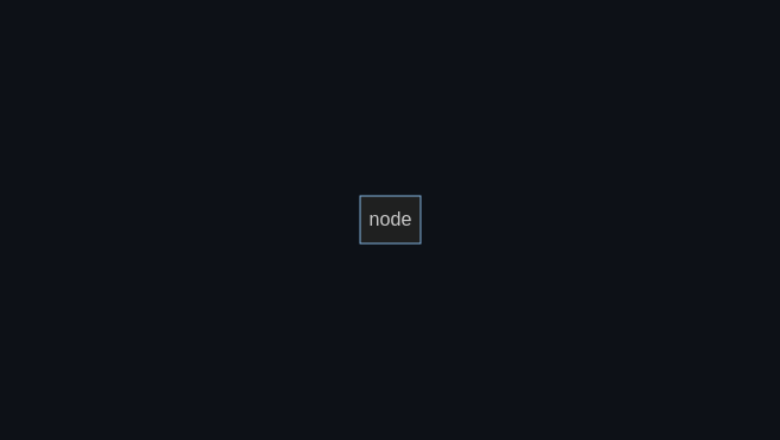
Направление блок-схемы, как уже было отмечено, задается с помощью ключевой аббревиатуры. Всего пользователю доступно 5 аббревиатур:
В узел можно поместить любой текст, для этого после имени надо указать текст в квадратных скобках.
flowchart TB
node[Текст в узле]
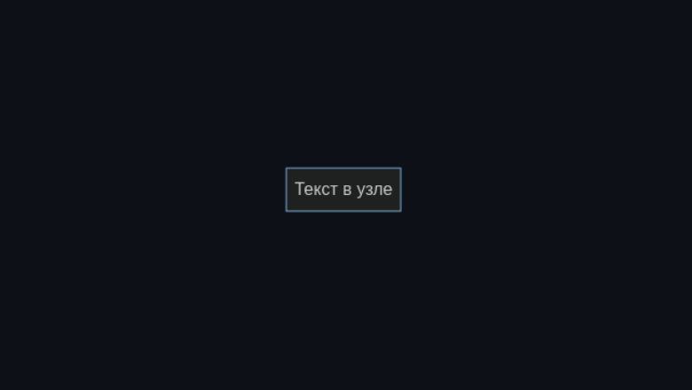
Сами узлы могут быть не только прямоугольными. Форма узла задается символами вокруг текста и доступны следующие геометрические фигуры:
flowchart TB
node1[Форма 1]
node2(Форма 2)
node3([Форма 3])
node4[[Форма 4]]
node5[(Форма 5)]
node6((Форма 6))
node7>Форма 7]
node8{Форма 8}
node9{{Форма 9}}
node10[/Форма 10/]
node11[\Форма 11\]
node12[/Форма 12\]
node13[\Форма 13/]
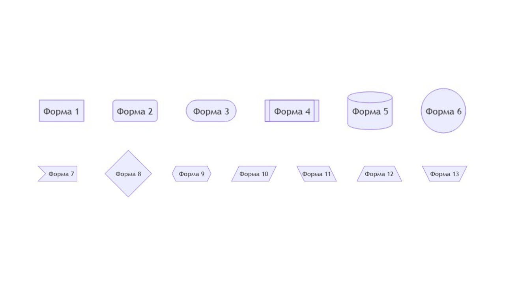
Иногда в самом тексте надо разместить специальные символы, которые в процессе рендеринга могут сломать всю конструкцию. Для этих целей доступно экранирование в виде кавычек. Все содержимое в кавычках по умолчанию принимается за текст.
flowchart LR
id1["Это текст (а вот это могло сломать рендеринг), но у нас есть экранирование"]
Узлы в блок-схеме соединяются с помощью стрелок и линий. В коде они указываются следующим образом:
flowchart TB
А --> B
C --- D
E -.-> F
G ==> H
I --o J
K --x L
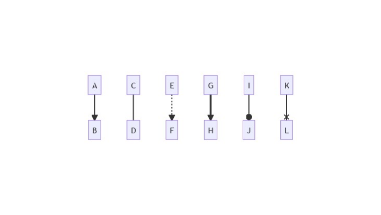
Так же как и в обычной блок-схеме, в Mermaid можно указывать вопрос или размещать текст на стрелках и связях узлов. Для этого достаточно ввести необходимый текст в конструкцию стрелки:
flowchart TD
A-- Text ---B
C---|Text|D
E-->|text|F
G-- text -->H
I-. text .-> J
K == text ==> L
Система рендеринга автоматически подбирает длину стрелок и соединений, но если надо явно задать большую длину, то можно указать большее количество дефисов.
Зачастую на одной блок-схеме необходимо показать взаимосвязанную работу двух алгоритмов. Для этих целей подойдут подсхемы, позволяющие визуально разделять несколько сущностей на одном рисунке. Задаются они следующей конструкцией:
subgraph название
описание графа
end
Пример:
flowchart TB
c1-->a2
subgraph one
a1-->a2
end
subgraph two
b1-->b2
end
subgraph three
c1-->c2
end
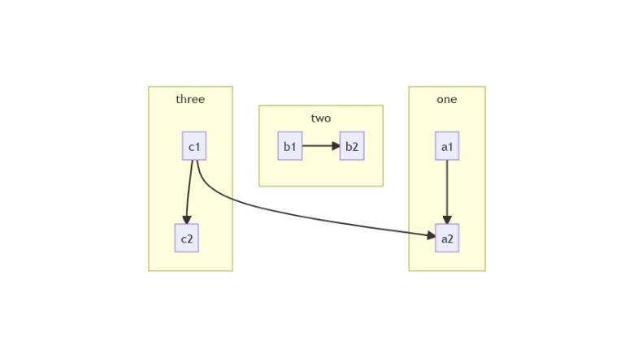
Узел можно сделать кнопкой, открывающей страницу в браузере. Для этого надо указать ссылку в описании узла. Ссылку необходимо экранировать кавычками:
flowchart TB
%% создаем узел
A --> B
%% Кстати да, комментарии задаются двумя знаками процента
%% Описываем действия для клика по узлу
click A "http://www.github.com"
После этого узел A станет кликабельным и по клику будет открываться страница, находящаяся по ссылке. Но проблема в том, что ссылка будет открываться в активной вкладке, что может быть неудобно. Проблему можно решить и указать в конце ссылке ключевое слово _blank.
flowchart TB
A --> B
click A "http://www.github.com" _blank
Узлам можно задавать альтернативные цвета. При этом для каждого отдельно взятого узла можно задать свой цвет. Для этого после описания блок-схемы необходимо написать ключевое слово style, после указать имя узла, а потом описать цветовую схему. Цветовая схема задается с помощью следующих тегов:
flowchart LR
id1(Start)-->id2(Stop)
style id1 fill:#3f3,stroke:#333,stroke-width:4px
style id2 fill:#ff2400,stroke:#333,stroke-width:4px,color:#fff,stroke-dasharray: 12 5
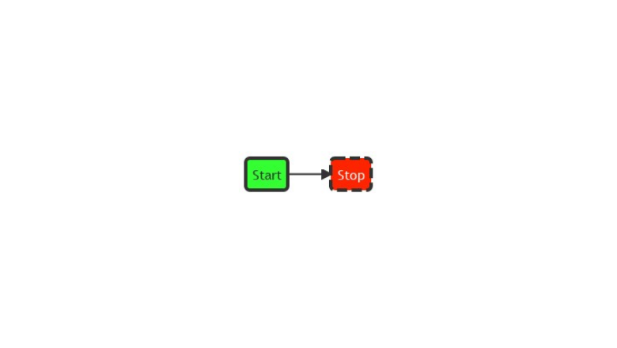
Если блок-схема большая, то может быть неудобно для каждого элемента расписывать его свойства. Для этого есть возможность создавать классы стилей и применять их. Класс объявляется с помощью ключевого слова classDef, далее следует название класса и теги через запятую. Применять стиль можно с помощью трех двоеточий после имени узла (:::).
flowchart LR
classDef class1 fill:#3f3,stroke:#333,stroke-width:4px
classDef class2 fill:#ff2400,stroke:#333,stroke-width:4px,color:#fff,stroke-dasharray: 12 5
A:::class1 --> B:::class2

Если применить все полученные знания, то можно построить вот такую несложную блок-схему.
flowchart TD
classDef class1 fill:#7FFFD4, stroke:#000, stroke-width:4px
A([Нам нужна диаграмма]):::class1
B{Диаграмма динамическая?}:::class1
A--->B
B--Да-->C([Лучше воспользоваться Mermaid.js]):::class1
B--Нет-->D([Можно просто нарисовать и вставить с помощью Markdown]):::class1
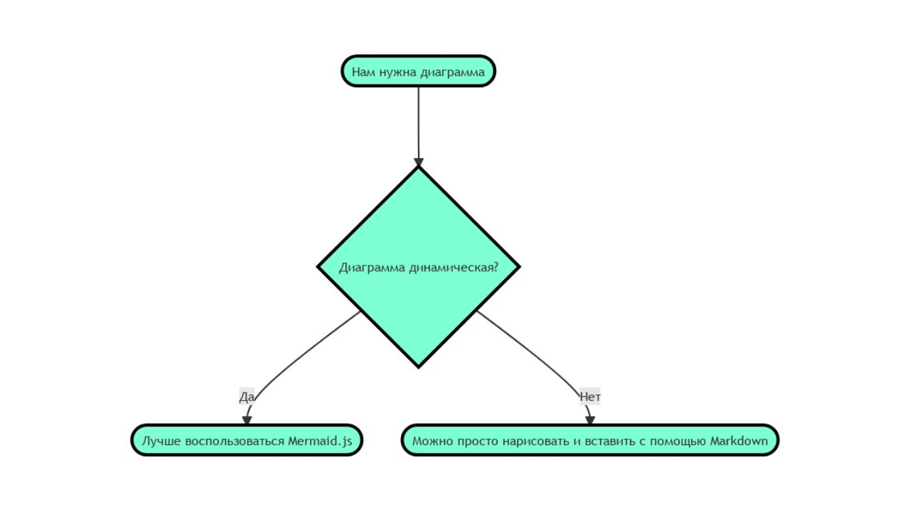
Круговая диаграмма — популярный и простой способ показать какую часть от общего числа занимает отдельные части. В Mermaid круговые диаграммы задаются с помощью ключевого слова pie, далее следует слово title, позволяющее задать название диаграммы и строка с самим названием. Но titlte можно опустить и не использовать, тогда диаграмма будет безымянной.
Данные в диаграмму записываются построчно следующим образом:
pie title Продажи легких закусок за декабрь 2021
"Сендвичи" : 223
"Салаты" : 50
"Канапе" : 100
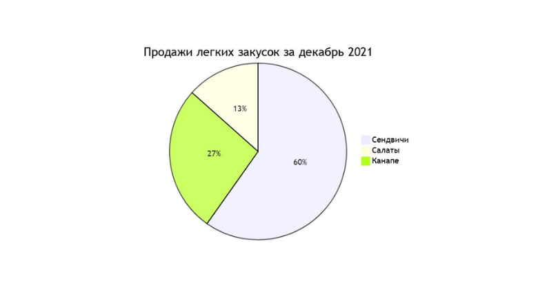
С помощью диаграммы пользовательского пути можно продемонстрировать процесс того, как каждый тип пользователя пользуется мобильным или веб приложением. Для создания подобных схем в Mermaid есть ключевое слово journey, title также отвечает за название всей диаграммы. С помощью section можно задавать разделы. В каждом разделе указываются конкретные шаги с оценкой по десятибалльной шкале и закрепленным за действием лицом. Все эти данные следует вводить через разделитель в виде двоеточия.
journey
title Процесс написания статьи
section Поиск / изучение
Поиск информации: 5: Я
Структурирование: 5: Я
section Пишем
Пишем черновик: 5: Я
Готовим картинки: 4: Я
section Редактируем
Проверяем: 3: Я
Финальные правки: 2: Я
section Публикация
Публикуем: 5: Я
Радуемся: 8: Я, Мой кот
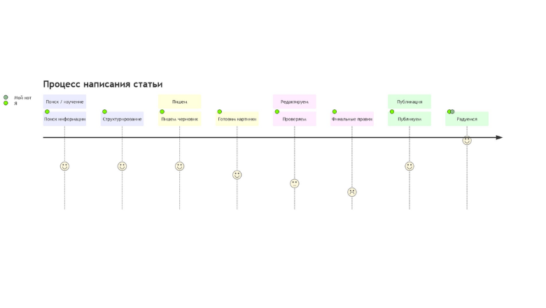
Диаграмма Ганта часто применяется в приложениях для планирования и отображает процесс работы над проектом. Обычно такая диаграмма состоит из двух основных частей — временной шкалы и задач. Подобные виды отслеживания задач довольно популярны и первую версию придумали аж в 1910 году, поэтому за более чем сотню лет появились альтернативные и расширенные виды. Но у всех вариантов всегда одна и таже задача.
В Mermaid диаграммы Ганта состоят из двух частей — на оси X находится шкала времени, а на оси Y задачи и порядок их выполнения. Такой вид диаграммы задается ключевым словом gantt, в title вписывается название. Далее следует указать формат даты, который система будет принимать для рендеринга итоговой диаграммы (dateFormat). Разделы по оси Y задаются с помощью ключевого слова section и названия раздела. А далее следует указывать сами задачи, которые состоят из короткого текста задачи, имени, даты начала и продолжительности. При этом текст задачи располагается с левой части, а остальные параметры с правой и разделяются запятой. Через ключевое слово after можно явно указать последовательность задач в рамках раздела, если этого не сделать, то система сама расположит их по порядку.
gantt
title Диаграмма Ганта
dateFormat YYYY-MM-DD
section Секция 1
Задача 1 :a1, 2014-01-01, 15d
Задача 2 :20d
section Секция 2
Задача 1 :2014-01-12 , 12d
Задача 2 : 24d
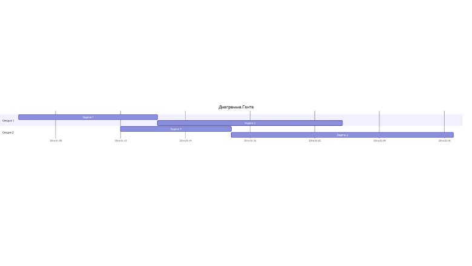
Для каждой задачи существуют несколько параметров, которые указывают на ее состояние:
gantt
title Диаграмма Ганта
dateFormat YYYY-MM-DD
section Секция 1
Milestone :milestone, a1, 2014-01-01, 15d
Crit :crit, a2, 2014-01-01, 15d
Active :active, a3, 2014-01-01, 15d
Done :done, a4, 2014-01-01, 15d
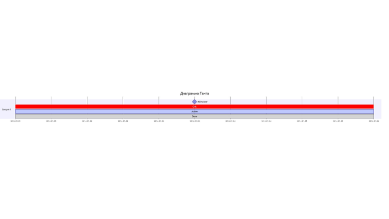
UML-диаграммы обычно используются для схематичного отображения классов и их связей в коде. Mermaid позволяет создавать диаграммы классов с помощью ключевого слова classDiagram. Каждый экземпляр класса содержит в себе три составляющие:
Есть два способа задать поля класса. Результаты рендеринга одинаковые, но второй способ занимает меньше места и требует меньше кода:
classDiagram
class BankAccount
BankAccount : +String owner
BankAccount : +Bigdecimal balance
BankAccount : +deposit(amount)
BankAccount : +withdrawl(amount)
Или
classDiagram
class BankAccount{
+String owner
+BigDecimal balance
+deposit(amount)
+withdrawl(amount)
}
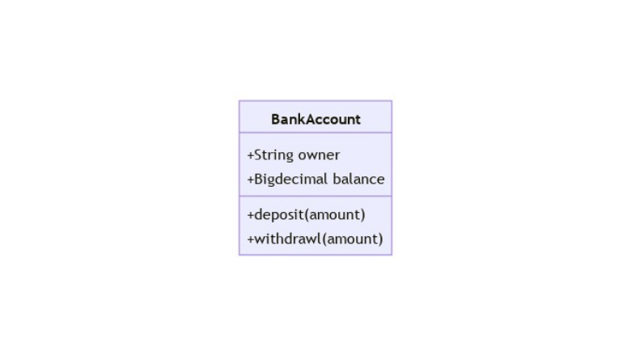
Модификаторы доступа полей класса условно задаются с помощью символов перед самим полем:
Отношения между классами задаются с помощью различных видов стрелок, общая модель выглядит следующим образом:
[класс][стрелка][класс]
|
Тип |
Описание |
|
<|-- |
Наследование |
|
*-- |
Композиция |
|
o-- |
Агрегация |
|
--> |
Ассоциация |
|
-- |
Ссылка (сплошная) |
|
..> |
Зависимость |
|
..|> |
Реализация |
|
.. |
Ссылка (пунктирная) |
classDiagram
classA <|-- classB
classC *-- classD
classE o-- classF
classG <-- classH
classI -- classJ
classK <.. classL
classM <|.. classN
classO .. classP
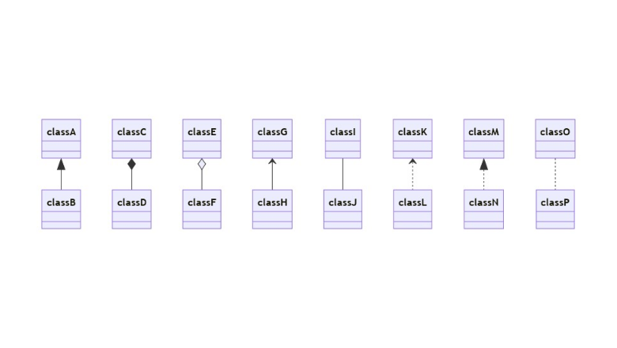
При желании можно явно указать вид связи в виде текста:
classE --o classF : Агрегация
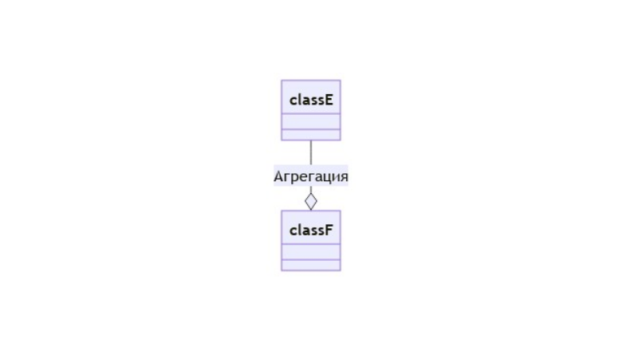
Двусторонние отношения задаются с помощью дублированной стрелки, направленной в обе стороны:
classDiagram
Animal <|--|> Zebra
Всего двусторонние отношения возможны для следующих видов взаимоотношений:
|
Тип |
Описание |
|
<| |
Наследование |
|
* |
Композиция |
|
o |
Агрегация |
|
> |
Ассоциация |
|
< |
Ассоциация |
|
|> |
Реализация |
Всего поддерживаются следующие типы множественного наследования:
Задается множественное наследование следующим образом:
classDiagram
Customer "1" --> "*" Ticket
Student "1" --> "1..*" Course
Galaxy --> "many" Star : Contains
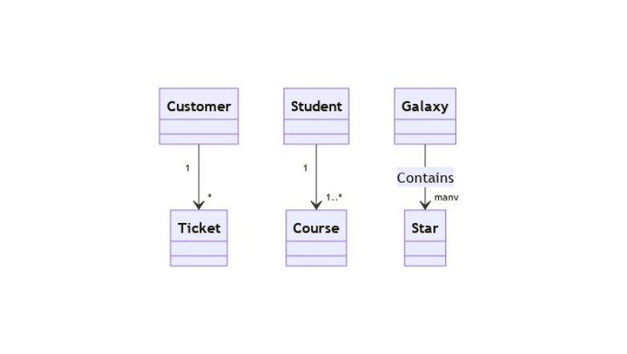
Классы можно аннотировать с помощью специальных маркеров, содержимое которых отображается в блоке с названием. Возможны 4 вида аннотаций:
Задать можно также двумя разными способами, которые не влияют на результаты рендеринга:
classDiagram
class Shape
<<interface>> Shape
Shape : noOfVertices
Shape : draw()
Или
class ShapeCopy {
<<interface>>
noOfVertices
draw()
}
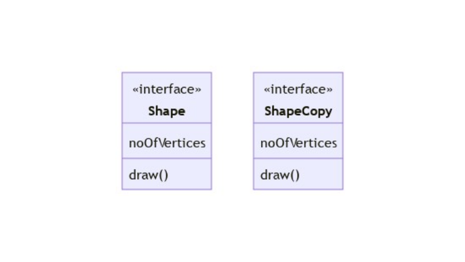
UML-диаграммам так же как и блок-схемам можно задавать направление. Оператор направления следует указывать после ключевого слова direction.
classDiagram
direction LR
class Student {
-idCard : IdCard
}
class IdCard{
-id : int
-name : string
}
Student "1" --o "1" IdCard : carries
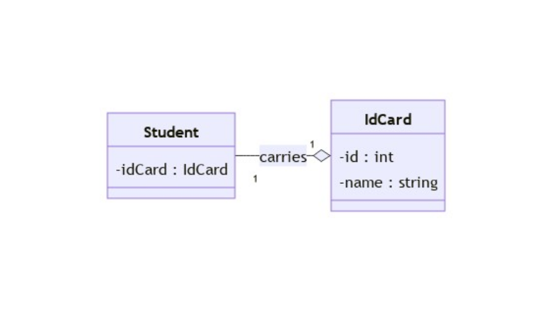
Класс UML-схемы может содержать в себе ссылку и быть кликабельным. Задается все таким же образом, как и в блок-схемах:
classDiagram
direction LR
class Student {
-idCard : IdCard
}
link Student "http://www.github.com"
Диаграмма состояния
Диаграммы состояний используются для описания поведения различных систем. По внешнему виду чем-то напоминают блок-схемы. Диаграммы состояний требуют наличия конечно количества состояний.
Mermaid умеет рендерить подобные диаграммы, а синтаксис максимально приближен к PlantUML, что должно упростить миграцию и обмен кодом. Задается диаграмма с помощью ключевого слова stateDiagram или stateDiagram-v2. Лучше использовать вторую версию рендеринга.
stateDiagram-v2
[*] --> Still
Still --> [*]
Still --> Moving
Moving --> Still
Moving --> Crash
Crash --> [*]
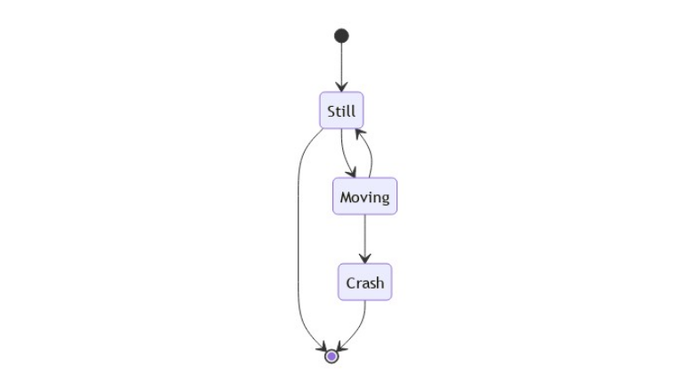
В представленной диаграмме описано три состояния — «Still» (Покой), «Moving» (Движение) и «Crash» (Столкновение). Из состояния покоя можно перейти в состояние движения и обратно, но нельзя перейти в состояние столкновения. А вот из состояния движения можно перейти в состояние столкновения.
Состояния задаются следующим образом:
stateDiagram-v2
s1
Для описания состояния есть два пути:
stateDiagram-v2
state "This is a state description" as s2
s2 : This is a state description
Переход от одного состояния к другому задается стрелками:
stateDiagram-v2
s1 --> s2
Текст перехода задается так:
stateDiagram-v2
s1 --> s2: A transition
Начало и конец диаграммы обозначается с помощью символа звездочки, а далее следует стрелка направления перехода:
stateDiagram-v2
[*] --> s1
s1 --> [*]
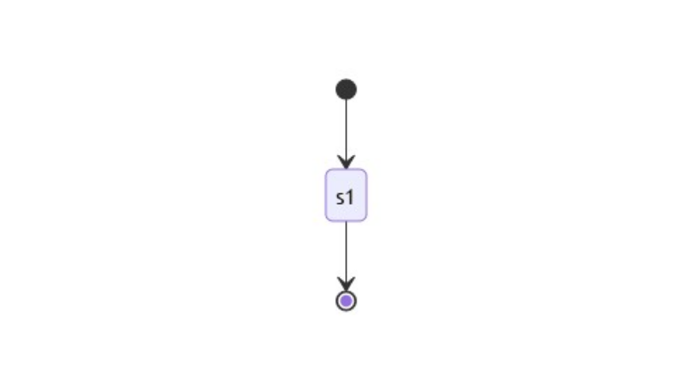
Состояния можно объединять в подсостояния и группировать между собой. Главное состояние обозначается ключевым словом state, за ним следует идентификатор, а потом фигурные скобки, в которых содержится тело подсостояния.
stateDiagram-v2
[*] --> First
state First {
[*] --> second
second --> [*]
}
Поддерживается и вложенность в несколько уровней:
stateDiagram-v2
[*] --> First
state First {
[*] --> Second
state Second {
[*] --> second
second --> Third
state Third {
[*] --> third
third --> [*]
}
}
}
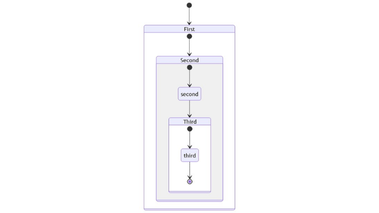
Можно оформлять переходы между несколькими подсостояниями:
stateDiagram-v2
[*] --> First
First --> Second
First --> Third
state First {
[*] --> fir
fir --> [*]
}
state Second {
[*] --> sec
sec --> [*]
}
state Third {
[*] --> thi
thi --> [*]
}
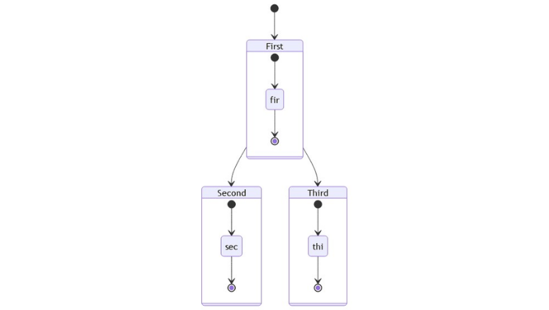
Выбор состояния может зависеть от определенного условия. Для организации выбора используется ключевое слово choice:
stateDiagram-v2
state if_state <<choice>>
[*] --> IsPositive
IsPositive --> if_state
if_state --> False: if n < 0
if_state --> True : if n >= 0
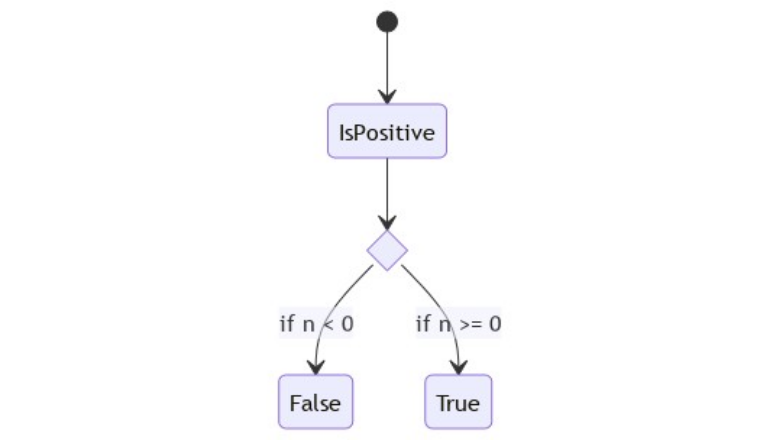
Несколько состояния могут сливаться в одно общее. Для этого состояния, которые сливаются, отмечают ключевым словом fork, а состояние в которое происходит слияние, отмечают словом join.
stateDiagram-v2
state fork_state <<fork>>
[*] --> fork_state
fork_state --> State2
fork_state --> State3
state join_state <<join>>
State2 --> join_state
State3 --> join_state
join_state --> State4
State4 --> [*]

К состояниям можно добавлять поясняющие заметки. Для этого существует ключевое слово note, после важно указать сторону с помощью right of или left of. Доступно два варианта записи в коде — один более подробный, другой компактнее:
stateDiagram-v2
State1: The state with a note
note right of State1
Important information! You can write
notes.
end note
State1 --> State2
note left of State2 : This is the note to the left.
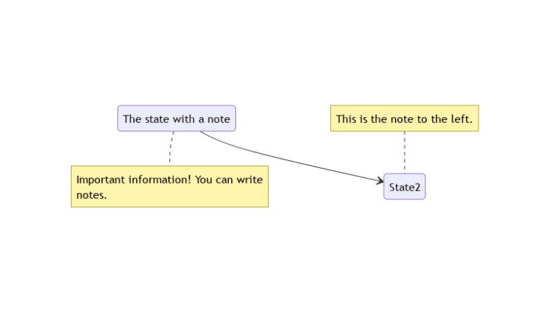
Направление диаграммы указывается после ключевого слова directions. Список доступных аббревиатур рассматривался в разделе блок-схем.
ER-модель — модель данных, описывающая взаимосвязанные вещи, представляющие интерес в определенной области знаний. Зачастую используется при высокоуровневом проектировании баз данных. Задается с помощью ключевого слова erDiagram.
erDiagram
CUSTOMER ||--o{ ORDER : places
ORDER ||--|{ LINE-ITEM : contains
CUSTOMER }|..|{ DELIVERY-ADDRESS : uses
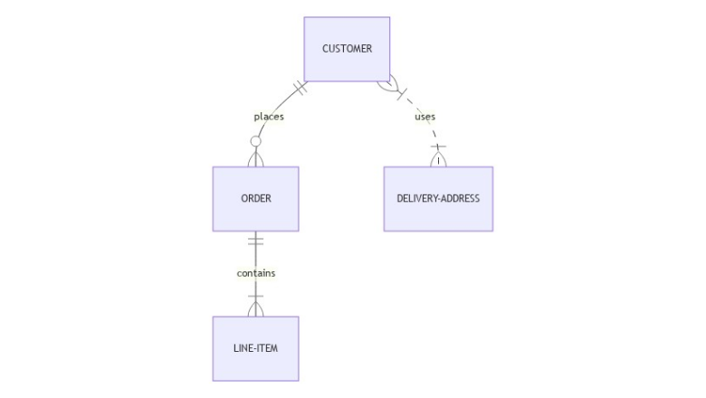
Mermaid не требует указывать имена сущностей с заглавной буквы, а связи обозначаются популярной нотацией «гусиные лапки».
Отношения задаются с помощью следующей базовой конструкцией:
<first-entity> [<relationship> <second-entity> : <relationship-label>]
К примеру:
PROPERTY ||--|{ ROOM : contains
|
Значение слева |
Значение справа |
Значение |
|
|o |
o| |
Минимум ноль, максимум ноль |
|
|| |
|| |
Минимум один, максимум один |
|
}o |
o{ |
Минимум ноль, максимум много |
|
}| |
|{ |
Минимум один, максимум много |
Атрибуты сущностей обозначаются после имени самой сущности. Также существует два вида записи.
erDiagram
CAR ||--o{ NAMED-DRIVER : allows
CAR {
string registrationNumber
string make
string model
}
PERSON ||--o{ NAMED-DRIVER : is
PERSON {
string firstName
string lastName
int age
}
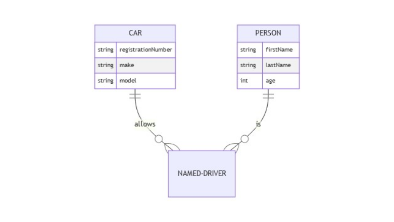
Атрибуты могут иметь ключи или комментарии. Первичные ключи (Primary Key) обозначаются как PR, а внешние ключи (Foreign Key) FK. Комментарий же определяется двойными кавычками в конце атрибута. При этом комментарий не может содержать в себе двойные кавычки.
erDiagram
CAR ||--o{ NAMED-DRIVER : allows
CAR {
string allowedDriver FK "The license of the allowed driver"
string registrationNumber
string make
string model
}
PERSON ||--o{ NAMED-DRIVER : is
PERSON {
string driversLicense PK "The license #"
string firstName
string lastName
int age
}
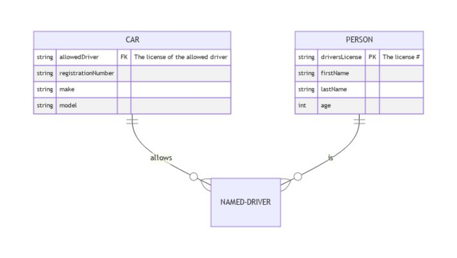
Диаграммы последовательности
На диаграммах последовательности отображается жизненный цикл одного объекта или нескольких, а также их взаимодействие. Диаграммы последовательности состоят из актеров в виде прямоугольников и взаимодействий в виде вертикальных «линий жизни».
В Mermaid диаграммы последовательности задаются с помощью ключевого слова sequenceDiagram:
sequenceDiagram
Alice->>John: Hello John, how are you?
John-->>Alice: Great!
Alice-)John: See you later!
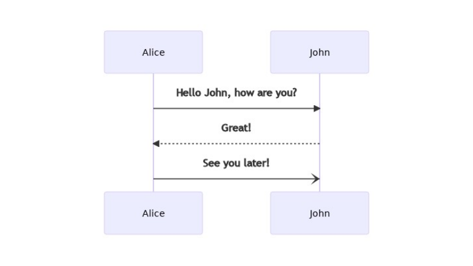
Актеров можно объявлять неявно сразу во время указания отношений, а можно сначала объявить всех участников с помощью ключевого слова participant, а потом отмечать отношения.
sequenceDiagram
participant Ваня
participant Петя
Ваня->>Петя: Привет, Петя
Петя->>Ваня: Привет, Ваня
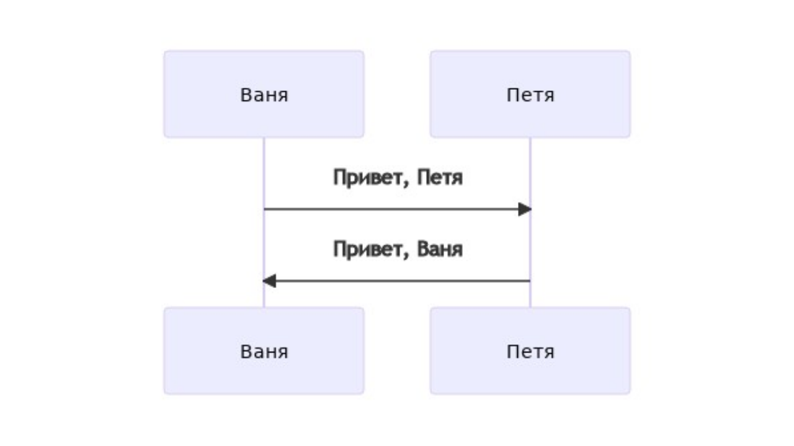
Если есть необходимость или непреодолимое желание использовать изображения стикменов вместо обезличенных прямоугольников, то для этого participant надо заменить на actor.
sequenceDiagram
actor Ваня
actor Петя
Ваня->>Петя: Привет, Петя
Петя->>Ваня: Привет, Ваня
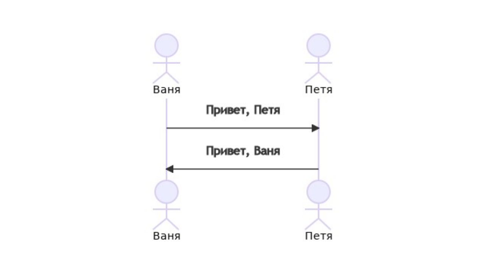
Каждый раз писать имя актера может быть не удобно и долго, особенно если схема состоит из десятка разных актеров. Для этих целей в Mermaid есть псевдонимы. Имя актера можно сократить до нескольких букв или буквенных идентификаторов.
sequenceDiagram
participant V as Ваня
participant P as Петя
V->>P: Привет, Петя
P->>V: Привет, Ваня
Связи и сообщения могут отображаться в виде сплошных или пунктирных линий. Общий вид выглядит следующим образом:
[Актер][Стрелка][Актер]:Текст сообщения
|
Тип |
Описание |
|
-> |
Сплошная линия без стрелки |
|
--> |
Пунктирная линия без стрелки |
|
->> |
Сплошная линия со стрелкой |
|
-->> |
Пунктирная линия со стрелкой |
|
-x |
Сплошная линия с крестиком на конце |
|
--x |
Пунктирная линия с крестиком на конце |
|
-) |
Сплошная линия с открытой стрелки |
|
--) |
Пунктирная линия с открытой стелки |
Актера явно можно активировать и деактивировать, отмечая область его действия. Осуществляется это с помощью ключевых слов activate и deactivate. Активации можно накладывать друг на друга.
sequenceDiagram
participant V as Ваня
participant P as Петя
V-)P: Привет, Петя
activate P
P->>V: Привет, Ваня
deactivate P
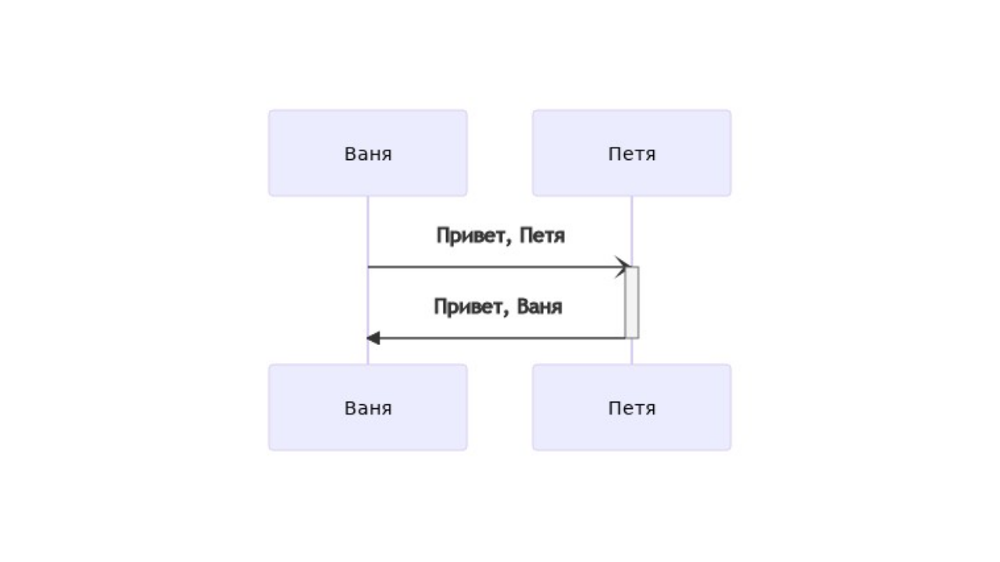
Доступна и сокращенная запись в виде знаков «+/-» на конце стрелок, результат рендеринга будет идентичен:
sequenceDiagram
participant V as Ваня
participant P as Петя
V-)+P: Привет, Петя
P->>-V: Привет, Ваня
Диаграммы последовательности можно снабжать заметками с помощью общего вида записи:
Note [ right of | left of | over ] [Актер]: Текст заметки
Если ключевые слова right of и left of уже встречались нам, то слово over новое. Оно позволяет размещать заметку сразу на нескольких актерах.
sequenceDiagram
participant V as Ваня
participant P as Петя
V-)+P: Привет, Петя
P->>-V: Привет, Ваня
Note over V,P: Заметка
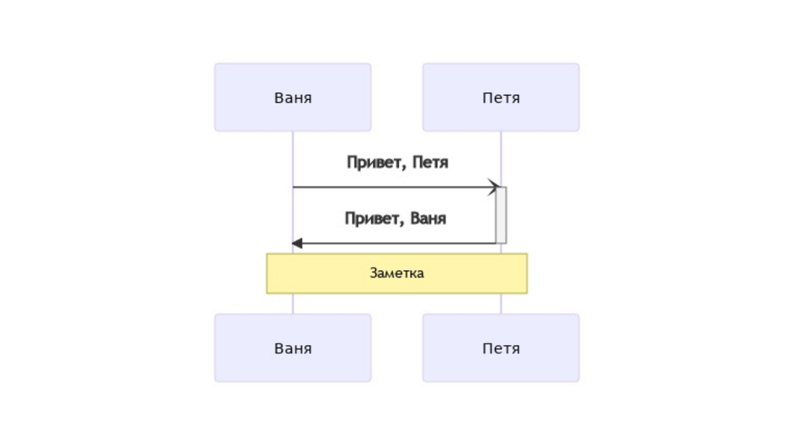
Часто одно и то же действие происходит в цикле и активируется с определенным интервалом. В Mermaid циклы задаются с помощью ключевого слова loop:
loop Текст цикла
... действие ...
end
К примеру:
sequenceDiagram
participant V as Ваня
participant P as Петя
V-)P: Привет, Петя
loop Каждое утро
P->>V: Привет, Ваня
end

Альтернативные сценарии и условия обозначаются следующей конструкцией:
alt Описание
... действие ...
else
... действие ...
end
Необязательные опциональные сценарии задаются без else:
opt Описание
... действие ...
end
Пример:
sequenceDiagram
participant V as Ваня
participant P as Петя
V->>P: Петя, как дела?
alt Если хорошо
P->>V: Все отлично!
else
P->>V: Все плохо :с
end
opt Если все сильно раздражает
P->>V: Отвали, Ваня!
end
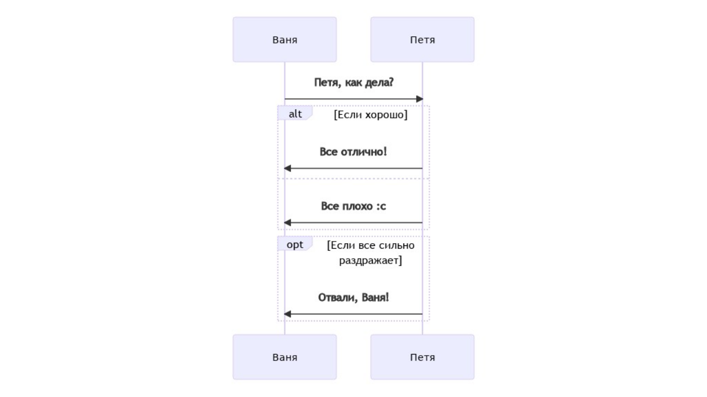
Можно указать параллельные действия. Для этого есть ключевое слово par:
par [Действие 1]
... описание ...
and [Действие 2]
... описание ...
and [Действие N]
... описание ...
end
К примеру так:
sequenceDiagram
participant V as Ваня
participant P as Петя
participant I as Ирина
par Ваня и Петя
V->>P: Привет, Петя
and Ваня и Ирина
V->>I: Привет, Ирина
end
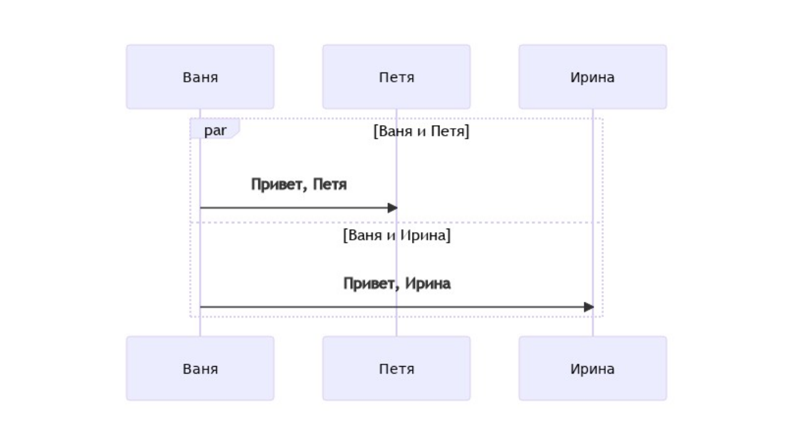
Фону можно добавлять кастомизированные цвета с помощью RGB и RGBA кодов:
rect rgb(0, 255, 0)
... содержимое ...
end
rect rgba(0, 0, 255, .1)
... содержимое ...
end
К примеру:
sequenceDiagram
participant V as Ваня
participant P as Петя
participant I as Ирина
rect rgb(191, 223, 255)
par Ваня и Петя
V->>P: Привет, Петя
and Ваня и Ирина
V->>I: Привет, Ирина
end
end
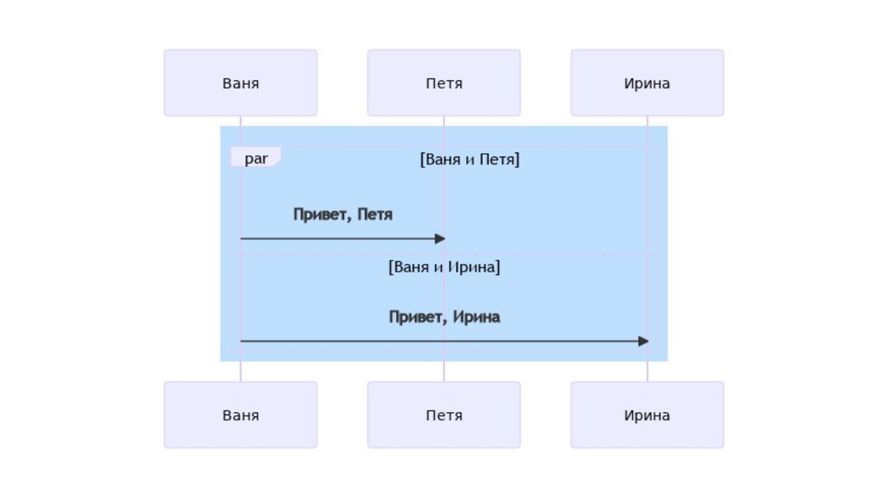
Действия на диаграмме можно автоматически пронумеровать с помощью ключевого слова autonumber в начале кода:
sequenceDiagram
participant V as Ваня
participant P as Петя
participant I as Ирина
autonumber
par Ваня и Петя
V->>P: Привет, Петя
and Ваня и Ирина
V->>I: Привет, Ирина
end
loop Каждые полчаса
V->>I: Сколько времени?
end
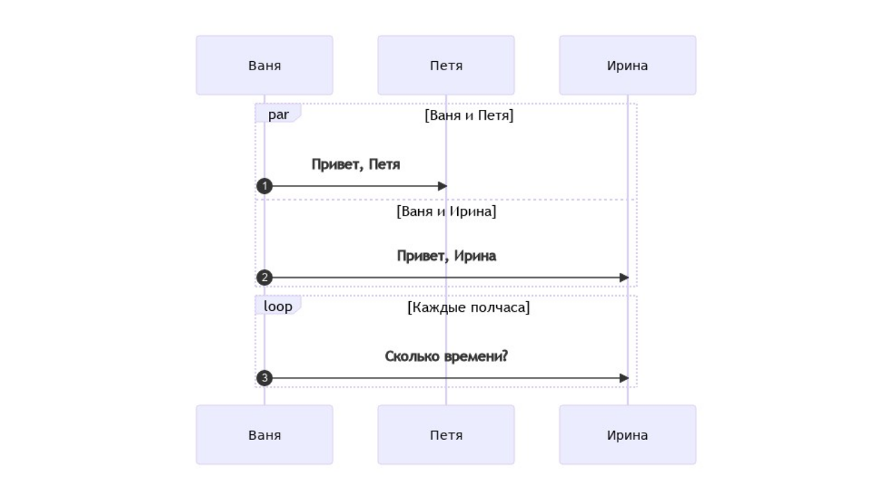
Последнее обновление добавило нативную поддержку диаграмм Mermaid в GitHub и теперь можно включать схемы и графики в README-файлы. Для этого в md-файле необходимо обозначить блок кода, отметить его тегом mermaid и вставить в него необходимый код. Все остальное сделаеть браузер.
```mermaid
... код диаграммы ...
```
Помимо этого, у проекта есть онлайн-редактор кода с моментальным выводом диаграмм. Из него схемы можно импортировать в PNG и SVG. Для популярных IDE и редакторов кода реализованы либо нативная поддержка, либо сторонние плагины.